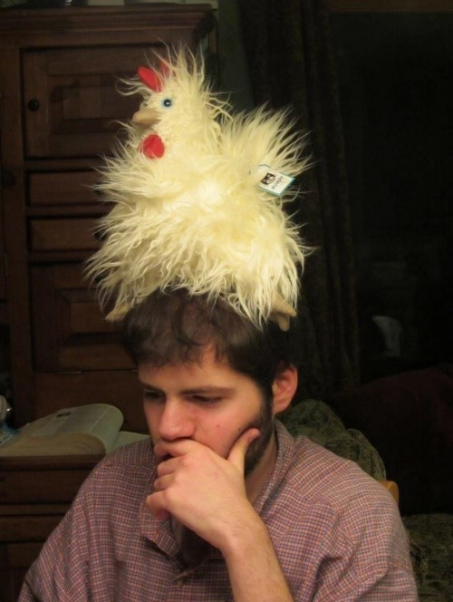
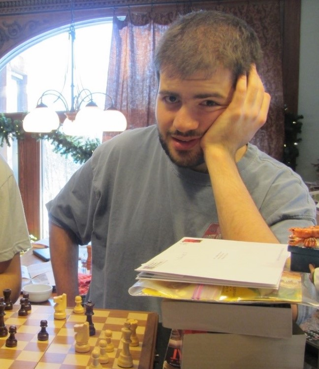

We can annotate more pictures to get a better sense of humor tells:
Above, the woman brightens, flushes, activates eyes, smiles, thinks fast, focuses on present, has energy, social seeks(turns to comment to someone), social tightens(slows pace to let others get closer), and so on.
Since there are many humor tells that are clearly expressed, humor is the majority of her emotional state:
Even though we often think of humor as something expressed with laughter and smiles, this isn’t always the case—like in the picture below, where the man is feeling humor withoutsmiling or laughing:

The man above is touching self, making efforts to spread humor, focusing on present, and showing non-normative behavior. So even though some common humor tells are absent(smiling), there's enough other humor tells present for us to say there's humor in his emotional state.
Even though we can identity humor in the man above, there aren’t enough humor tells for us to think his humor is particularly intense or prominent. In this case, we’d see his humor as part of a mixed emotional state:
We can look at another picture where humor is a minor part of a mixed emotional state:

Above, the man has (partially)expansive posture, a (light)smile, touching self, (unenthusiastic)social seeking(by glancing at the picture taker). These humor tells help us see there’s at least some humor in his emotional state.
The man isn’t just expressing humor tells, but other emotion tells at the same time—these other emotion tells show exasperation, frustration, tiredness, and so on. Because of this, we'd say the man has a mixed emotional state that includes some humor, but not much.